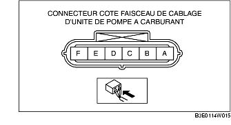

INSPECTION DE L'UNITE DE POMPE DE CARBURANT [ZJ, Z6, LF].
B3E011413350W03
Inspection du fonctionnement de pompe à carburant
1. Brancher le WDS ou équivalent sur le DLC-2.
2. Déposer le bouchon du réservoir de carburant
3. Positionner le contacteur d'allumage sur ON.
4. À l'aide de la fonction de simulation 'FP', vérifier que le son de fonctionnement est émis depuis la pompe à carburant lorsque la fonction 'FP' passe de OFF à ON.
-
• Si le son de fonctionnement ne peut être perçu, mesurer la tension de la borne A du connecteur côté faisceau de câblage de pompe à carburant.

-
- Si elle correspond aux valeurs spécifiées, inspecter les éléments suivants :
-
• Continuité de la pompe de carburant
-
- Si ce n'est pas le cas, inspecter les éléments suivants :
-
• Relais de pompe à carburant
-
• Faisceau de câblage et connecteurs entre relais principal-relais de pompe à carburant-pompe à carburant
-
Standard
-
B + (contacteur d'allumage sur ON)
Inspection de continuité
1. Débrancher le câble négatif de la batterie.
2. Débrancher le connecteur de l'unité de pompe à carburant.
3. Inspecter la continuité entre les bornes A-E de l'unité de pompe à carburant.
-
• Si aucun dysfonctionnement n'est relevé, effectuer l' 'Inspection de circuit ouvert/court-circuit".
-
• En l'absence de continuité, remplacer la pompe à carburant.
Inspection de Circuit Ouvert/Court-Circuit
1. Inspecter s'il y a circuit ouvert ou court-circuit (test de continuité) dans les faisceaux de câblage suivants.
Circuit ouvert
-
• En cas d'absence de continuité, le circuit est ouvert. Réparer ou remplacer le faisceau.
-
- Borne A d'unité de pompe à carburant et borne D de relais de pompe à carburant
-
- Borne E d'unité de pompe à carburant et masse de carrosserie
Court-circuit
-
• En cas de continuité, le circuit est en court-circuit. Réparer ou remplacer le faisceau.
-
- Borne A d'unité de pompe à carburant et masse de carrosserie
-
- Borne E d'unité de pompe à carburant et alimentation
Inspection de pression statique de carburant
-
Remarque
-
• L'inspection de pression statique de carburant ne peut être effectuée car le régulateur de pression est intégré à l'unité de pompe à carburant.